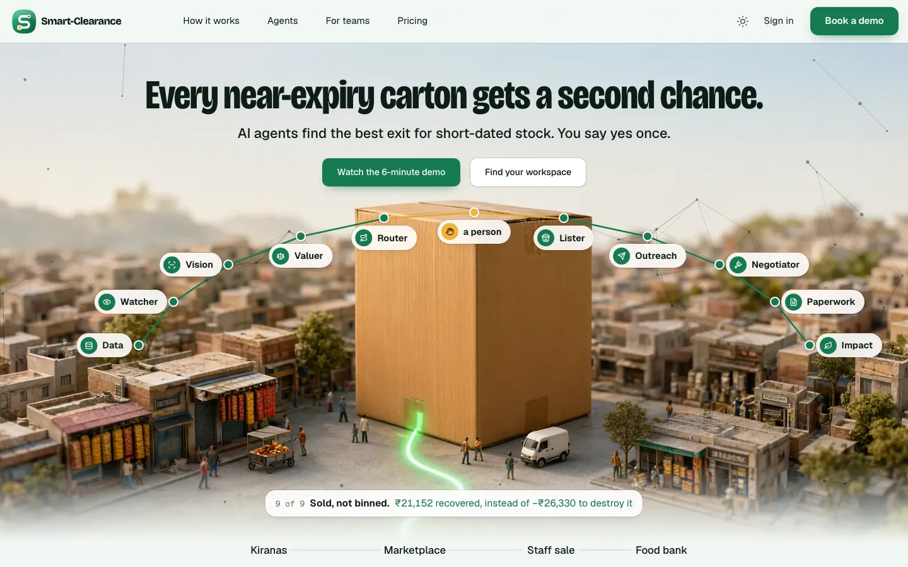
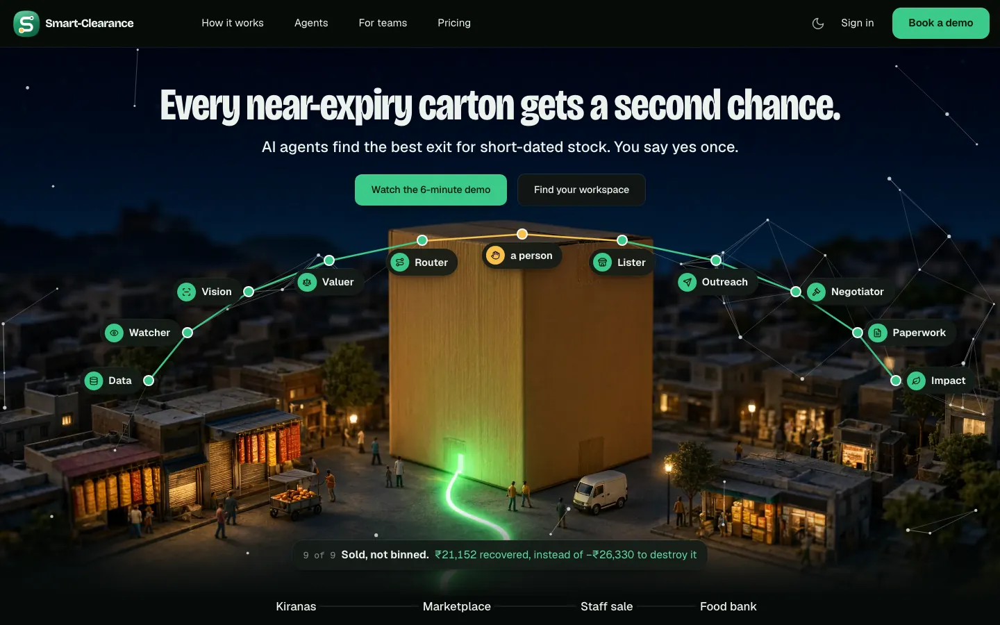
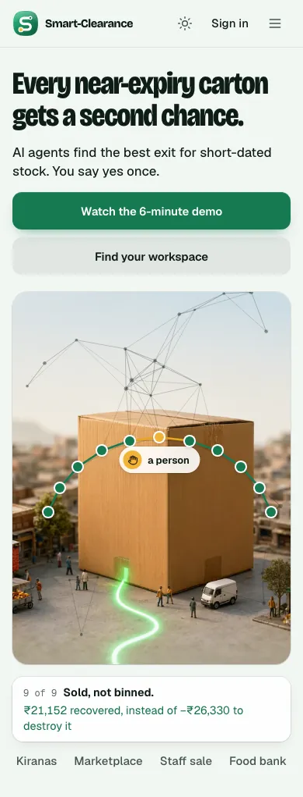
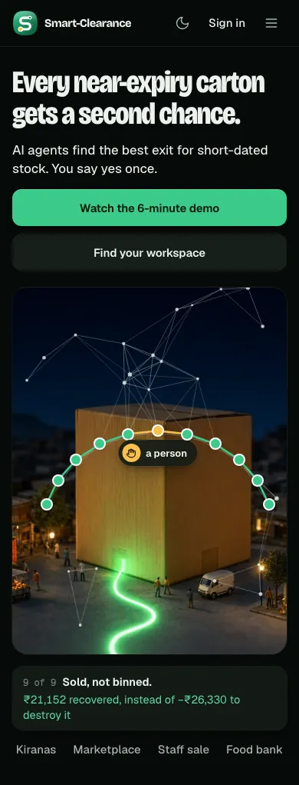

The agents become a constellation over the carton, and the batch's handoffs draw it
RecommendedThe ten agents and the person are named stars on an arc over the giant carton, in a faint field of linked nodes (ThreeUI's constellation field). As the batch moves:
- each stop's star lights, and the caption under the carton says what its agent did;
- a green line draws from star to star as each agent hands off, amber through the person's yes;
- at rest the whole arc is lit: ten agents, one person, one batch sold;
- the field leans toward the pointer for a moment when it moves (ThreeUI's gravity), then settles.
- Why recommended
- It reads at a glance as a team of AI agents working your stock: the agentic part you asked to see first. The carton and the town stay the picture: the arc sits around the top of the carton, under the buttons, so it hides little of the town. On desktops every name is on screen at once.
- Trade-off
- It has the most "network" look of the three. It is kept to fine ink lines with no glow, so it doesn't tip into a neon AI dashboard. On phones only the agent at work is named; the rest are stars.
- The build would touch
design3/site: the hero's overlay (a canvas for the field, the named stars, the caption and Replay); the stops section removed; the batch card retired;- the SvelteKit port, the same, with
motionand a canvas; - ThreeUI's MIT notice, shipped with it.



